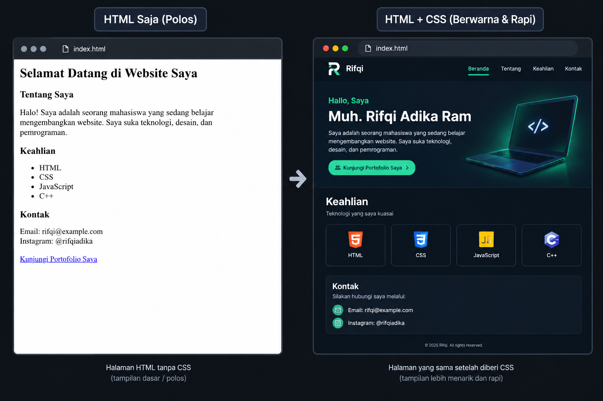
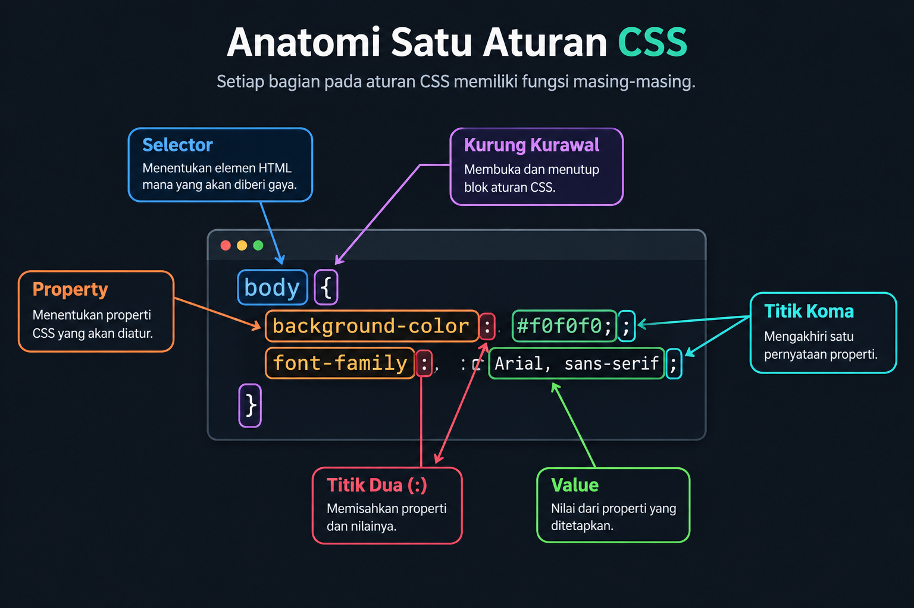
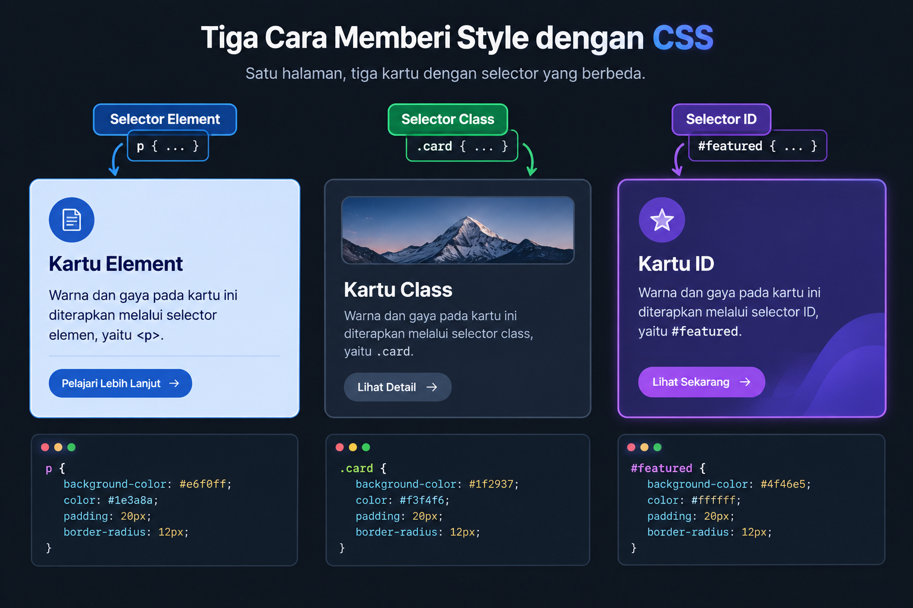
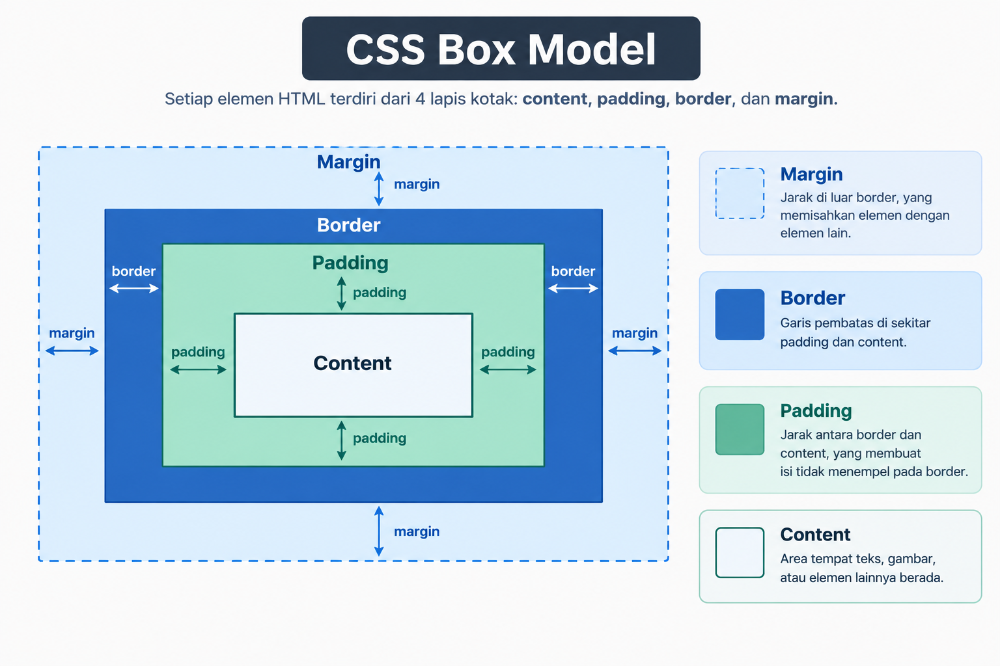
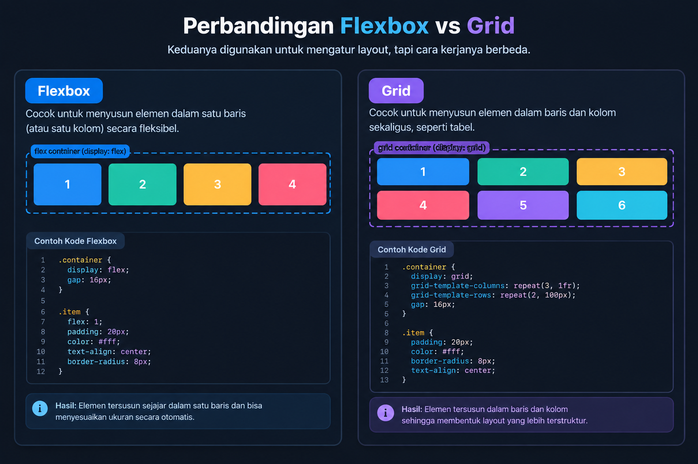
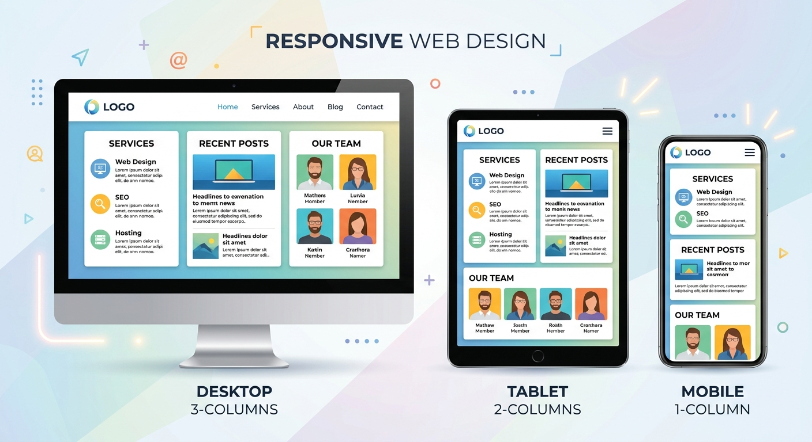

CSS
Mengatur tampilan halaman web, dari warna dan font sampai tata letak yang responsif.
Pengertian & Fungsi CSS
Teks Penjelasan
CSS (Cascading Style Sheets) adalah bahasa yang digunakan untuk mengatur tampilan dari dokumen HTML, seperti warna, ukuran, jarak, dan posisi elemen. Kata “Cascading” artinya bertingkat, merujuk pada aturan prioritas ketika beberapa aturan CSS saling bertentangan.
Fungsi CSS mencakup mengatur warna teks dan latar belakang, mengatur font dan ukuran teks, mengatur jarak antar elemen, mengatur ukuran dan bentuk elemen, mengatur tata letak halaman, serta membuat tampilan responsif terhadap berbagai ukuran layar.
Gambar / Ilustrasi

Video
Contoh Kode
p {
color: navy;
font-size: 16px;
}Hubungan HTML & CSS
Teks Penjelasan
CSS selalu menunjuk ke elemen HTML tertentu menggunakan selector, lalu menerapkan aturan gaya padanya. Ada tiga cara menghubungkan CSS ke HTML, yaitu inline langsung pada atribut style, internal di dalam tag <style> pada <head>, dan external melalui file .css terpisah yang dihubungkan lewat <link>.
Cara external adalah praktik terbaik karena memisahkan struktur (HTML) dari tampilan (CSS), sehingga kode lebih mudah dirawat.
Video
Contoh Kode
<head>
<link rel="stylesheet" href="gaya.css">
</head>Sintaks CSS
Teks Penjelasan
Satu aturan CSS terdiri dari selector yaitu penunjuk elemen, diikuti tanda kurung kurawal yang berisi satu atau lebih pasangan property dan value, dipisahkan titik koma.
Gambar / Ilustrasi

Video
Contoh Kode
selector {
property: value;
}Selector (Pembahasan Mendalam)
Teks Penjelasan
Selector elemen menunjuk seluruh elemen dengan nama tag tertentu, misalnya p untuk semua paragraf. Selector class ditandai titik dan dapat dipakai berulang kali pada banyak elemen. Selector ID ditandai pagar dan menunjuk satu elemen spesifik yang idealnya hanya dipakai satu kali per halaman.
Selector juga bisa digabung, misalnya selector turunan (dipisah spasi) untuk elemen di dalam elemen lain, atau beberapa selector sekaligus dipisah koma agar mendapat aturan yang sama.
Gambar / Ilustrasi

Video
Contoh Kode
.peringatan {
color: red;
font-weight: bold;
}
#judul-utama {
text-align: center;
}
nav a {
color: white;
}Property & Value
Teks Penjelasan
Property adalah nama aspek tampilan yang ingin diatur, misalnya color, font-size, atau margin. Value adalah nilai yang diberikan pada property tersebut, misalnya red, 16px, atau 10px.
Video
Contoh Kode
.tombol {
background-color: #2563eb;
color: white;
font-size: 14px;
}Warna
Teks Penjelasan
Warna pada CSS dapat ditulis dalam beberapa format, yaitu nama warna seperti red, kode heksadesimal seperti nomor pagar ff0000, atau fungsi rgb dengan tiga angka.
Video
Contoh Kode
h1 { color: #1e293b; }
body { background-color: rgb(240, 240, 245); }Font
Teks Penjelasan
Property font-family menentukan jenis huruf, font-size menentukan ukuran, font-weight menentukan ketebalan seperti normal atau bold, dan font-style menentukan gaya seperti miring atau italic. Menuliskan beberapa nama font berurutan adalah praktik font fallback, jika font pertama tidak tersedia maka browser mencoba font berikutnya.
Video
Contoh Kode
p {
font-family: 'Segoe UI', Arial, sans-serif;
font-size: 16px;
font-weight: normal;
}Margin & Padding
Teks Penjelasan
Setiap elemen HTML memiliki box model yang terdiri dari isi (content), padding yaitu jarak dalam antara isi dan border, border yaitu garis tepi, dan margin yaitu jarak luar antara elemen tersebut dan elemen tetangganya.
Kesalahan umum pemula adalah menganggap margin dan padding hal yang sama, padahal margin memengaruhi jarak dari elemen lain sedangkan padding memengaruhi jarak dari isi elemen itu sendiri.
Gambar / Ilustrasi

Video
Contoh Kode
.kotak {
padding: 16px;
margin: 24px;
border: 1px solid #ccc;
}Border
Teks Penjelasan
Property border mengatur garis tepi elemen, terdiri dari ketebalan, jenis garis, dan warna. Property border-radius membuat sudut elemen menjadi membulat.
Video
Contoh Kode
.kartu {
border: 2px solid #0f6e56;
border-radius: 12px;
}Width & Height
Teks Penjelasan
Property width dan height mengatur lebar dan tinggi elemen, dapat menggunakan satuan tetap seperti px atau satuan relatif seperti persen, vw, dan vh.
Video
Contoh Kode
.gambar-profil {
width: 150px;
height: 150px;
border-radius: 50%;
}Layout (Flexbox & Grid)
Teks Penjelasan
Property display menentukan cara sebuah elemen mengalir pada halaman, misalnya block yang memenuhi lebar dan turun baris baru, inline yang sejajar horizontal, atau inline-block yang sejajar namun tetap bisa diatur ukurannya.
Flexbox digunakan untuk menyusun elemen dalam satu baris atau satu kolom secara fleksibel, dengan kontrol perataan memakai justify-content dan align-items. Grid digunakan untuk menyusun elemen dalam bentuk baris dan kolom sekaligus, cocok untuk tata letak halaman yang lebih kompleks seperti galeri foto.
Gambar / Ilustrasi

Video
Contoh Kode
.navbar {
display: flex;
justify-content: space-between;
align-items: center;
gap: 16px;
}
.galeri {
display: grid;
grid-template-columns: repeat(3, 1fr);
gap: 12px;
}Responsive Design
Teks Penjelasan
Desain responsif memastikan tampilan halaman menyesuaikan diri secara baik pada berbagai ukuran layar seperti desktop, tablet, dan ponsel, umumnya menggunakan media query.
Kesalahan umum pemula adalah hanya menguji tampilan di layar besar tanpa memeriksa tampilan pada layar kecil, sehingga elemen tumpang tindih atau teks terpotong pada perangkat mobile.
Gambar / Ilustrasi

Video
Contoh Kode
@media (max-width: 600px) {
.kontainer {
grid-template-columns: 1fr;
}
}Coba Kodenya! — Simulasi CSS Live
Tulis kode HTML dan CSS di kotak kiri, hasilnya muncul langsung di kanan. Ubah kodenya dan lihat perubahannya!
Latihan Singkat CSS
Yuk coba 5 soal singkat! Pilih jawabanmu, langsung muncul feedback-nya.